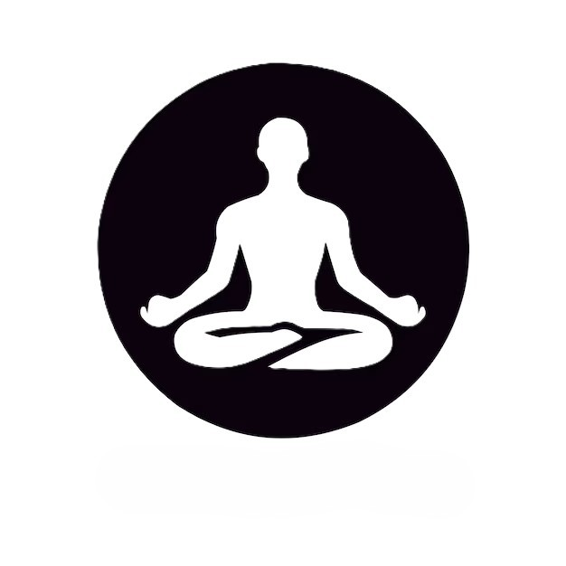

My Yoga Journey
Hello, myself Varaprasad. I have been practicing Yoga for 15 years. During my journey, I have participated in more than 20 national competitions, represented my state of Karnataka 18 times, and represented India twice on the international stage. I have also had the honor of representing Visvesvaraya Technological University (VTU) three times in the All India Inter-University competitions. Additionally, I am a proud recipient of the Ganarajyotsava Prashasti (twice), the District Best Sports Person award, the Yoga Ratna Award, and have been nominated for the state award.
Gallery